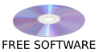

About Us
RE:LABS is a group of hobbyist developers who work together on software projects, experiment with technologies, and share an interest in development at both lower and higher levels of abstraction.
We are neither a company nor a traditional organization—we are a group of friends united by a shared interest in programming, systems, and building our own tools.
The project lead is M.T. SOFTWARE (mtsoft736), who coordinates the development and direction of individual projects within RE:LABS.
Projects
- yapp - Yet Another Print Protocol
- reCMS - Experimental CMS made with love ❤️
- saferm - A simple and safer rm alternative.
- TMK - Truxa Minimal Kernel
Tools
- RELABS-Toolchain-GCC-16.1.0-x86_64-mingw-w64
Contact
PGP Public keyAdresses
Clearnet / Onion Mirror / Website repo
